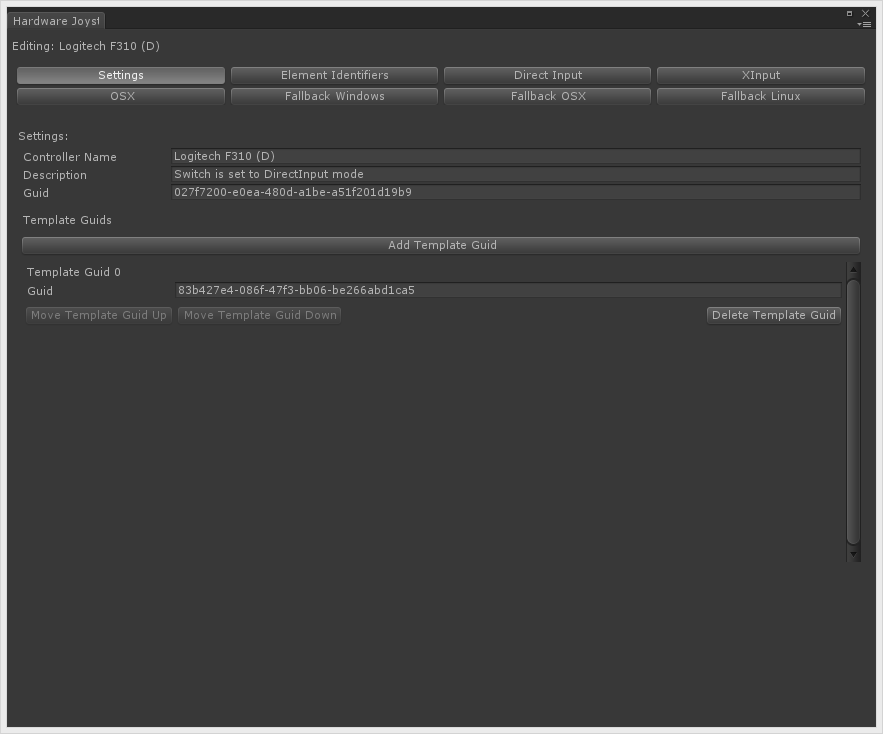

How To's
Topics:
- Important classes
- Getting a Player
- Getting Input
- Getting a Controller
- Receiving joystick connect and disconnect events
- Assigning joysticks to players
- Enabling and disabling controller maps
- Managing controller maps at runtime
- Displaying a button/axis/key name to the user for an Action
- Getting contributing input sources for an Action
- Determining which controller was last used
- Calibrating controller axes
- Vibration/Rumble
- Converting scripts from UnityEngine.Input to Rewired
- Implementing a "Press Start to Join" controller assignment system
- Creating a controller mapping screen
- Saving and loading controller maps
- Saving and loading calibration maps
- Modifying Input Behaviors during runtime
- Creating on-screen touch controllers
- Creating new controller definitions
- Creating new controller templates
- Adding a controller to an existing controller template
- Excluding controller definitions
- Identifying joysticks on Windows fallback or Windows Webplayer platforms
- Hiding input settings on the Unity launcher
- Configuring ArcadeGuns G-500 AimTrak Light Guns
- Logitech G27 Racing Wheel Support
- Saitek Pro Flight TPM Panel Support
- Using Sony DualShock 4 special features
- Using P.I. Engineering Rail Driver special features
- Using XBox One controller special features on XBox One platform
- Using Rewired to control Unity's new UI
Important classes
Rewired's API has been organized using helper classes to group methods and properties topically. This makes it easier to find the methods you are looking for through the IDE.
Global Information:
- ReInput - The main class for accessing all input-related information.
- ReInput.players - Players and Player-related information.
- ReInput.controllers - Controllers and controller-related information of all types.
- ReInput.mapping - Controller Map, Action, Input Behavior and other data in the Rewired Input Manager.
Player-Related Information:
- Player - Get input from the Player.
- Player.controllers - All controller-related information in a Player.
- Player.controllers.maps - All map-related information in a Player.
More classes are listed in the API reference.
Getting a Player
Get a Player by id or name through ReInput.players.GetPlayer
More methods for accessing Players: ReInput.players
using UnityEngine;
using Rewired;
public class MyClass : MonoBehaviour {
public int playerId;
private Player player;
void Awake() {
// Get the Player for a particular playerId
player = ReInput.players.GetPlayer(playerId);
// Some more examples:
// Get the System Player
Player systemPlayer = ReInput.players.GetSystemPlayer();
// Iterating through Players (excluding the System Player)
for(int i = 0; i < ReInput.players.playerCount; i++) {
Player p = ReInput.players.Players[i];
}
// Iterating through Players (including the System Player)
for(int i = 0; i < ReInput.players.allPlayerCount; i++) {
Player p = ReInput.players.AllPlayers[i];
}
}
}
Getting Input
There are two primary ways to get input in Rewired:
- Polling for input - This is the most common method and is very similar to how you normally get input in Unity.
- Using input events - This method allows you to get input by registering for an event and receving a callback when that event takes place.
Polling Method:
Get input through the Player class.
using UnityEngine;
using Rewired;
public class MyClass : MonoBehaviour {
public int playerId;
private Player player;
void Awake() {
player = ReInput.players.GetPlayer(playerId);
}
void Update() {
if(player.GetAxis("Move Horizontal") != 0.0f) {
Debug.Log("Move Horizontal!");
}
if(player.GetButtonDown("Fire")) {
Debug.Log("Fire!");
}
}
}
Event Method:
Use delegates to receive input events from a Player.
public class MyClass : MonoBehaviour {
public int playerId;
private Player player;
void Awake() {
player = ReInput.players.GetPlayer(playerId);
// Add delegates to receive input events from the Player
// This event will be called every frame any input is updated
player.AddInputEventDelegate(OnInputUpdate, UpdateLoopType.Update);
// This event will be called every frame the "Fire" action is updated
player.AddInputEventDelegate(OnFireUpdate, UpdateLoopType.Update, "Fire");
// This event will be called when the "Fire" button is first pressed
player.AddInputEventDelegate(OnFireButtonDown, UpdateLoopType.Update, InputActionEventType.ButtonJustPressed, "Fire");
// This event will be called when the "Fire" button is first released
player.AddInputEventDelegate(OnFireButtonUp, UpdateLoopType.Update, InputActionEventType.ButtonJustReleased, "Fire");
// The update loop you choose for the event matters. Make sure your chosen update loop is enabled in
// the Settings page of the Rewired editor or you won't receive any events.
}
void OnInputUpdate(InputActionEventData data) {
switch(data.actionName) { // determine which action this is
case "Move Horizontal":
if(data.GetAxis() != 0.0f) Debug.Log("Move Horizontal!");
break;
case "Fire":
if(data.GetButtonDown()) Debug.Log("Fire!");
break;
}
}
void OnFireUpdate(InputActionEventData data) {
if(data.GetButtonDown()) Debug.Log("Fire!");
}
void OnFireButtonDown(InputActionEventData data) {
Debug.Log("Fire!");
}
void OnFireButtonUp(InputActionEventData data) {
Debug.Log("Fire Released!");
}
}
Controller Method:
A third method would be to get input directly from a controller's buttons and axes. This is generally not the best choice as you will lose all the advantages of the player-centric system including mapping. Methods for accessing element values can be found in the respective controller classes:
void LogMouseValues() {
Mouse mouse = ReInput.controllers.Mouse;
Debug.Log("Left Mouse Button = " + mouse.GetButton(0));
Debug.Log("Right Mouse Button (Hold) = " + mouse.GetButton(1));
Debug.Log("Right Mouse Button (Down) = " + mouse.GetButtonDown(1));
Debug.Log("Right Mouse Button (Up) = " + mouse.GetButtonUp(1));
}
void LogPlayerJoystickValues(Player player) {
// Log the button and axis values for each joystick assigned to this Player
for(int i = 0; i < player.joystickCount; i++) {
Joystick joystick = player.Joysticks[i];
Debug.Log("Joystick " + i + ":");
LogJoystickElementValues(joystick); // log all the element values in this joystick
}
}
void LogJoystickElementValues(Joystick joystick) {
// Log Joystick button values
for(int i = 0; i < joystick.buttonCount; i++) {
Debug.Log("Button " + i + " = " + joystick.Buttons[i].value); // get the current value of the button
}
// Log Joystick axis values
for(int i = 0; i < joystick.axisCount; i++) {
Debug.Log("Axis " + i + " = " + joystick.Axes[i].value); // get the current value of the axis
}
}
Getting a Controller
You generally don't need to get controllers for normal gameplay input tasks, but there are certain times when you need to get a controller such as during controller remapping. There are a number of ways you can get controllers.
To get a specific controller:
ReInput.controllers.GetController
player.controllers.GetController
player.controllers.GetControllerWithTag
You can get the mouse from:
ReInput.controllers.Mouse
player.controllers.Mouse
You can get the keyboard from:
ReInput.controllers.Keyboard
player.controllers.Keyboard
You can loop through all controllers:
ReInput.controllers.Controllers
ReInput.controllers.Joysticks
ReInput.controllers.CustomControllers
You can loop through controllers assigned to a Player:
player.controllers.Joysticks
player.controllers.CustomControllers
Receiving joystick connect and disconnect events
To receive an event when a controller is connected, register for ReInput.ControllerConnectedEvent.
To receive an event when a controller is fully disconnected, register for ReInput.ControllerDisconnectedEvent.
To receive an event when a controller is about to be disconnected, register for ReInput.ControllerPreDisconnectEvent.
Note: Joysticks are not guaranteed to be available on Awake or Start on all platforms or input sources. If joysticks are available immediately to Rewired on Awake, joystick connected events will not be sent. If joystick availability is delayed, a controller connected event will be sent when Rewired detects the joystick. If you need to check for the presence of joysticks at the beginning of your game, you should always check in both Awake or Start and by subscribing to the ReInput.ControllerConnectedEvent.
using UnityEngine;
using Rewired;
public MyClass : MonoBehaviour {
void Awake() {
ReInput.ControllerConnectedEvent += OnControllerConnected;
ReInput.ControllerDisconnectedEvent += OnControllerDisconnected;
ReInput.ControllerPreDisconnectEvent += OnControllerPreDisconnect;
}
void OnControllerConnected(ControllerStatusChangedEventArgs args) {
// This function will be called when a controller is connected
// You can get information about the controller that was connected via the args parameter
Debug.Log("A controller was connected! Name = " + args.name + " Id = " + args.controllerId + " Type = " + args.controllerType);
}
void OnControllerDisconnected(ControllerStatusChangedEventArgs args) {
// This function will be called when a controller is fully disconnected
// You can get information about the controller that was disconnected via the args parameter
Debug.Log("A controller was disconnected! Name = " + args.name + " Id = " + args.controllerId + " Type = " + args.controllerType);
}
void OnControllerPreDisconnect(ControllerStatusChangedEventArgs args) {
// This function will be called when a controller is about to be disconnected
// You can get information about the controller that is being disconnected via the args parameter
// You can use this event to save the controller's maps before it's disconnected
Debug.Log("A controller is being disconnected! Name = " + args.name + " Id = " + args.controllerId + " Type = " + args.controllerType);
}
}
Assigning joysticks to players
Joysticks will be assigned to Players automatically if you have enabled and configured joystick auto-assignment in the Rewired Editor under Settings. However, if you wish to manually assign or unassign joysticks, you can do so with the following methods:
Player class:
- player.controllers.AddController
- player.controllers.RemoveController
- player.controllers.ContainsController
- player.controllers.ClearControllersOfType
- player.controllers.ClearAllControllers
ReInput class:
- ReInput.controllers.IsControllerAssigned
- ReInput.controllers.IsControllerAssignedToPlayer
- ReInput.controllers.RemoveControllerFromAllPlayers
Also, see Receiving joystick connect and disconnect events to get a notification when a controller is connected or disconnected.
// Example: Shows how to assign Joysticks manually to the next Player that doesn't have one assigned. void Awake() { // Listen for controller connection events ReInput.ControllerConnectedEvent += OnControllerConnected; // Assign each Joystick to a Player initially foreach(Joystick j in ReInput.controllers.Joysticks) { if(ReInput.controllers.IsJoystickAssigned(j)) continue; // Joystick is already assigned // Assign Joystick to first Player that doesn't have any assigned AssignJoystickToNextOpenPlayer(j); } } // This will be called when a controller is connected void OnControllerConnected(ControllerStatusChangedEventArgs args) { if(args.controllerType != ControllerType.Joystick) return; // skip if this isn't a Joystick // Assign Joystick to first Player that doesn't have any assigned AssignJoystickToNextOpenPlayer(ReInput.controllers.GetJoystick(args.controllerId)); } void AssignJoystickToNextOpenPlayer(Joystick j) { foreach(Player p in ReInput.players.Players) { if(p.controllers.joystickCount > 0) continue; // player already has a joystick p.controllers.AddController(j, true); // assign joystick to player return; } }
Enabling and disabling controller maps
Controller Maps can be enabled or disabled at will via scripting. This can be useful if you want to change game modes and have a different set of controls become active. For example, opening a menu screen. Disabled controller maps will not return any value when the Player is queried for an Action's input value. Controller Maps are stored in the Player class.
The easiest way to enable and disable maps in a Player is to use the following methods:
- player.controllers.maps.SetAllMapsEnabled - Set enabled state on all maps owned by the Player or all maps for a specific controller type.
- player.controllers.maps.SetMapsEnabled - Set enabled state on a group of maps owned by the Player by controller type, category, and layout.
You can also enable and disable maps one by one by accessing the maps through Player:
- player.controllers.maps.GetMap
- player.controllers.maps.GetMaps
- player.controllers.maps.GetAllMaps
- player.controllers.maps.GetAllMapsInCategory
Once you have the map, enable or disable it by setting controllerMap.enabled = true or controllerMap.enabled = false. Disabled maps will not contribute to input.
Example: Set enabled state on all of a Player's controller maps in a certain category.
using Rewired;
public class MyClass {
void SetEnabledStateOnMapsInCategory(Player player, string categoryName, bool state) {
// The quick way
player.controllers.maps.SetMapsEnabled(state, categoryName);
// The manual way
foreach(ControllerMap map in player.controllers.maps.GetAllMapsInCategory(categoryName)) {
map.enabled = state; // set the enabled state on the map
}
}
}
Managing controller maps at runtime
Controller Maps can be added, removed, cleared, and reloaded during gameplay via scripting. This can be useful if you want to load the default controller maps as defined in the Rewired Editor after having made changes, or to load a controller map in a different Layout. Controller Maps are stored in the Player class.
Methods:
- player.controllers.maps.LoadMap
- player.controllers.maps.LoadDefaultMaps
- player.controllers.maps.AddMap
- player.controllers.maps.RemoveMap
- player.controllers.maps.ClearAllMaps
- player.controllers.maps.ClearMaps
- More methods for controller map management
Displaying a button/axis/key name to the user for an Action
If you want to display some help text on the screen telling the user which button/key/axis to press for a particular Action, you can get this information from the ActionElementMap.elementIdenfitierName property. The following example shows various ways to get this information for an Action.
Player player = Rewired.ReInput.players.GetPlayer(0); // If set to true, only enabled maps will be returned bool skipDisabledMaps = true; // Get the first ActionElementMap of any type with the Action "Fire" Debug.Log(player.controllers.maps.GetFirstElementMapWithAction("Fire", skipDisabledMaps).elementIdentifierName); // Get the first button map with the Action "Jump" Debug.Log(player.controllers.maps.GetFirstButtonMapWithAction("Jump", skipDisabledMaps).elementIdentifierName); // Get the first axis map with the Action "Move Horizontal" Debug.Log(player.controllers.maps.GetFirstAxisMapWithAction("Move Horizontal", skipDisabledMaps).elementIdentifierName); // Loop over all ActionElementMaps of any type with the Action "Fire" foreach(var aem in player.controllers.maps.ElementMapsWithAction("Fire", skipDisabledMaps)) { Debug.Log(aem.elementIdentifierName); } // Loop over all button maps with the Action "Fire" foreach(var aem in player.controllers.maps.ButtonMapsWithAction("Fire", skipDisabledMaps)) { Debug.Log(aem.elementIdentifierName); } // Loop over all Axis maps with the Action "Move Horizontal" foreach(var aem in player.controllers.maps.AxisMapsWithAction("Move Horizontal", skipDisabledMaps)) { Debug.Log(aem.elementIdentifierName); } // All elements mapped to all joysticks in the player foreach(Joystick j in player.controllers.Joysticks) { // Loop over all Joystick Maps in the Player for this Joystick foreach(JoystickMap map in player.controllers.maps.GetMaps(j.id)) { // Loop over all button maps foreach(ActionElementMap aem in map.ButtonMaps) { Debug.Log(aem.elementIdentifierName + " is assigned to Button " + aem.elementIndex + " with the Action " + ReInput.mapping.GetAction(aem.actionId).name); } // Loop over all axis maps foreach(ActionElementMap aem in map.AxisMaps) { Debug.Log(aem.elementIdentifierName + " is assigned to Axis " + aem.elementIndex + " with the Action " + ReInput.mapping.GetAction(aem.actionId).name); } // Loop over all element maps of any type foreach(ActionElementMap aem in map.AllMaps) { if(aem.elementType == ControllerElementType.Axis) { Debug.Log(aem.elementIdentifierName + " is assigned to Axis " + aem.elementIndex + " with the Action " + ReInput.mapping.GetAction(aem.actionId).name); } else if(aem.elementType == ControllerElementType.Button) { Debug.Log(aem.elementIdentifierName + " is assigned to Axis " + aem.elementIndex + " with the Action " + ReInput.mapping.GetAction(aem.actionId).name); } } } }
Getting contributing input sources for an Action
You can get information about all the input sources currently contributing to the value of an Action in a Player. There are several methods available to get this information:
- Player.GetCurrentInputSources
- Player.IsCurrentInputSource
- InputActionEventData.GetCurrentInputSource
- InputActionEventData.IsCurrentInputSource
You can either retrieve a list of all input sources currently contributing to input or query whether a controller type or an individual controller contributed input.
You can get data about the current input sources and then use that to tell which controllers or even which individual elements on the controllers were used to provide the input in the current frame.
See InputActionSourceData for more information on data returned.
Determining which controller was last used
You can determine which controller or controller type was last used by any Player or an individual Player. One common use of this technique is to switch on-screen glyphs depending on whether the player is using a mouse/keyboard or a joystick.
Use the following methods:
Then you can get the controller type from Controller.type.
// Get last controller from a Player and the determine the type of controller being used
Controller controller = player.GetLastActiveController();
if(controller != null) {
switch(controller.type) {
case ControllerType.Keyboard:
// Do something for keyboard
break;
case ControllerType.Joystick:
// Do something for joystick
break;
case ControllerType.Mouse:
// Do something for mouse
break;
case ControllerType.Custom:
// Do something custom controller
break;
}
}
Calibrating controller axes
The general process of calibrating controller axes is as follows:
- Get the controller (see Getting a Controller for more information.)
- Get the calibration map
- Set the calibrated values
You can see an example of axis calibration in Rewired/Examples/ControlRemapping1.
Useful API Reference:
CalibrationMap
AxisCalibration
AxisCalibrationData
Joystick.calibrationMap
CalibrationMapSaveData
Joystick.GetCalibrationMapSaveData
Vibration/Rumble
Rewired supports vibration on compatible controllers including the XBox 360 gamepad in the Windows, Windows Store, and Linux platforms.
Important: You must have XInput enabled in the Rewired Input Manager on Windows platforms.
Just get the controller(s) from the Player class and set the motor levels on each of them.
// Set vibration by motor type
foreach(Joystick j in player.controllers.Joysticks) {
if(!j.supportsVibration) continue;
j.SetVibration(leftMotorValue, rightMotorValue);
}
// Set vibration by motor index
foreach(Joystick j in player.controllers.Joysticks) {
if(!j.supportsVibration) continue;
if(j.vibrationMotorCount > 0) j.SetVibration(0, leftMotorValue);
if(j.vibrationMotorCount > 1) j.SetVibration(1, rightMotorValue);
}
// Stop vibration
foreach(Joystick j in player.controllers.Joysticks) {
j.StopVibration();
}
This would set vibration on all controllers assigned to the player.
There are also these functions/properties in the Joystick class:
Joystick.SetVibration
Joystick.StopVibration
Joystick.supportsVibration
Joystick.vibrationLeftMotor
Joystick.vibrationRightMotor
Converting scripts from UnityEngine.Input to Rewired
Converting a script from UnityEngine.Input is a very straightforward process for a single player game. For a quick conversion, simply do a two find and replace operations:
- "Input.GetButton" -> "Rewired.ReInput.players.GetPlayer(0).GetButton"
- "Input.GetAxis" -> "Rewired.ReInput.players.GetPlayer(0).GetAxis"
This will get the value of each Action from Player 0 for all GetButton, GetButtonDown, GetButtonUp, GetAxis, and GetAxisRaw calls.
You will also need to create the Actions in the Rewired Input Manager that match the string names expected in the code. And of course you will have to create Keyboard, Mouse, Joystick, and/or Custom Controller maps and assign them to Players as is standard Rewired practice.
If your code has Input.GetKey calls, if you want those to instead use Rewired Actions, you will want to change these to "Rewired.ReInput.players.GetPlayer(0).GetButton" and replace the Unity KeyCode with the name or id of the Action you want to use.
You could also cache the Player object on Awake for the Player in question and use that variable in the find/replace operation, but the above example provides a quick method to convert most scripts that use UnityEngine.Input to Rewired.
Implementing a "Press Start to Join" controller assignment system
Normally, Rewired will assign controllers to Players when each controller is detected based on settings in the Rewired Input Manager -> Settings page. This will assign a controller to each Player in order as they become available so that the first joystick is assigned to Player 0, the second to Player 1, and so on. But the question has come up many times as to how to be able to let users just pick up any attached controller and press "Start", then have that player join as the next available Player with that controller assigned. This kind of assignment method isn't as straightforward to implement.
First you should understand a little bit how controller maps work. Controller maps are loaded by the Player, not the Controller, therefore there is no Action named "Start" in that controller from which to generate input unless you assign that controller to a Player first. Because if this, you cannot simply ask each unassigned controller for the value of "Start" to determine if a player wants to join because it doesn't have access to any controller maps.
There are various ways this assignment scheme can be achieved. Each method has its own advantages and disadvantages. Please read through them and decide which is most appropriate for your game.
Method 1: Using a variable Rewired.Player as an input source for your own Player object.
- Make your Players (let's say Player 0 – 3) in the editor.
- Assign them all joystick maps for the controllers you want to support.
- Create a “Start” action and be sure it is assigned in the controller maps you assigned to the Players on some button -- preferably, multiple buttons just to be sure in case a particular controller has no Start button (or “Center 2” as defined in the Dual Analog Gamepad Template.) A safe bet would be to put it on “Center 2” and “Action Bottom Row 1” for the Dual Analog Gamepad Template, and Button 0 on Unknown Controller (if you're defining an Unknown Controller map).
- Leave controller auto assignment enabled. Rewired will give each Rewired.Player a controller if available.
- Loop through all Rewired.Players and check for player.GetButtonDown(“Start”).
- Now in your game code, simply assign whichever Rewired.Player returned TRUE to your game-side player object. Your game-side player object may be Player[0], but the Rewired.Player doesn’t have to be. The user could press a button on the controller assigned to Rewired.Player[3], but you can still then use Rewired.Player[3] as the input source for your game-side Player[0].
If you also support Keyboard and Mouse, at that point you might want to go ahead and load the appropriate keyboard map layouts for your Player[0] into Rewired.Player[3]. This works best if keyboard layouts for the various in-game players will be fixed. IE: Player 1 always uses the WASD set, Player 2 always uses JIKM, etc. (There are ways to make this assignment dynamic too but that's not covered here.)
Method 2: Easy but does not detect "Start", only any button press:
- Disable controller auto assignment in the Rewired Editor.
- In your script, iterate over all joysticks and check for any button press.
- Assign that joystick to the first player.
Method 3: Detect "Start" button press manually:
- Disable controller auto assignment in the Rewired Editor.
- Assign all controllers to the System Player on start so we can detect the result of Actions.
- Check for the value of the "Start" Action you've created and assigned to the Start button or other appropriate button in your controller maps.
- Loop through the controller maps in the System Player for each joystick, loop through each button map looking for the actionId of your "Start" action. (Or use the ControllerMap.GetButtonMapsWithAction method instead.)
- Then use the elementIndex in the button map to find which button index corresponds to the "Start" action in that controller.
- In each controller, then check the value of the button at that index to see if that was the controller that was activated.
- If it was, assign that controller to Player 1 and deassign it from System.
What you're essentially doing here is working backwards from the result of the Action trying to find what controller element(s) contributed to this final combined value. It goes against the source controller-agnostic nature of Rewired's player-centric system, but it is possible to do.
A quicker but less accurate method would be to do step 1-3 above then:
Loop through each controller in the System Player and find out which controller was the last to have any button pressed and assign that controller to the Player.
This isn't perfect since any button could have been pressed on any controller besides the ones assigned to the "Start" action, but in most cases it would probably work fine.
There are also other functions to get the last active controller, but they won't help you here because you're only concerned with the "Start" button press and not axes, etc.
Method 4: This method only works if you know your users are going to only be using one specific controller type (such as an Xbox controller on an Xbox system).
- Use ReInput.controllers.polling.PollAllControllersForAllButtons to poll for button presses.
- Check the returned ControllerPollingInfo.elementIdentifierId or ControllerPollingInfo.elementIdentifierName to determine which button was pressed.
Creating a controller mapping screen
Rewired now includes Control Mapper, a customizable UI control mapping system built with uGUI that should fit the needs of many games. Please see Control Mapper for more information.
Creating a mapping screen from scratch
Creating a mapping screen can be a difficult task. To get you started, see the example mapping screen in Rewired/Examples/ControlRemapping1. You should be able to adapt this remapping example to fit the needs of your game. The example uses Unity's legacy GUI system.
Every game's needs are different with regards to user mapping screens. The example project was built for a fairly complex game with a number of players and various game modes and supports saving and loading maps, controller assignment, element remapping, calibration, conflict checking, and more. You should be able to learn what you need to from the example project to customize your own mapping screen.
IMPORTANT NOTE:
The ControlRemapping1 demo is 2,000 lines of code. Do not be afraid of reading through the code. The vast majority of that code is GUI code to handle all the modal boxes and such. There is a wealth of information in this demo.
Just as a brief summary, the basic process for changing an element's mapping goes like this:
- Get the Player for which you are changing element mappings.
- Get the ControllerMap you want to modify from the Player.
Various functions here can help in finding it. For example:
player.controllers.maps.GetMap - Modify an existing ActionElementMap or create a new one with your new assignment. You have your choice of ways to do this, some of which are:
ControllerMap.ReplaceOrCreateElementMap
ControllerMap.ReplaceElementMap
ControllerMap.GetFirstElementMapWithAction (then modify its properties directly)
ControllerMap.GetElementMapsWithAction
There are more methods here.
Not that the above summary does not include the extra steps as shown in the demo which cover conflict checking, how to map axes to buttons and vice versa, dealing with split axes, how to poll for input, saving/loading, and a whole lot more. That's all detailed in the demo, so please read through it to learn how it's done.
IMPORTANT NOTE 2:
Creating your own control remapping system is not for beginners and requires patience and a certain level of programming skill. If you do not have the necessary programming skills, patience, or willingness to roll up your sleeves and dig into the code to learn how to do it, you shouldn't attempt it. If your programming skills are at a level where you need a step-by-step tutorial, this topic is too advanced for you. The purpose of this example is to learn the API. If you are looking for a drop-in control remapping system that doesn't require coding, please see Control Mapper.
Saving and loading controller maps
UserDataStore is a class designed to help with saving and loading of controller maps, Input Behaviors, calibration settings, and more. Please see User Data Store for more information.
There are several steps involved in saving and loading controller maps.
Saving:
- Get the save data from each Player in XML format.
- Save the data to a storage medium.
Loading:
- Identify the controllers you want to load maps for.
- Load the map data in XML format.
- Set the map data in the Player.
Rewired includes a basic system for storing the saved XML data -- UserDataStore_PlayerPrefs which may not be suitable for everyone. Since every game and platform may have different requirements for data storage, you will probably want to write your own data storage system for your specific needs. You will have to save the data in a format most suitable to your game and platform. Possible options are PlayerPrefs, a database, binary or text files, cloud storage, etc. (UserDataStore can optionally be extended to support any storage medium.)
The example mapping demo in Rewired/Examples/ControlRemapping1 includes saving and loading of Controller Maps, Axis Calibration Maps, and Input Behaviors. See this demo project to learn the process of saving and loading. Note: The demo project uses PlayerPrefs for the data storage medium. This is not ideal, but was done for simplicity and cross-platform compatibility for the example. It should not be difficult to substitute another storage medium suitable to your platform.
Example Code from the ControlRemapping1 (see example in Rewired/Examples/ControlRemapping1 for complete code)
private void SaveAllMaps() {
// This example uses PlayerPrefs because its convenient, though not efficient, but you could use any data storage method you like.
IList<Player> allPlayers = ReInput.players.AllPlayers;
for(int i = 0; i < allPlayers.Count; i++) {
Player player = allPlayers[i];
// Get all savable data from player
PlayerSaveData playerData = player.GetSaveData(true);
// Save Input Behaviors
foreach(InputBehavior behavior in playerData.inputBehaviors) {
string key = GetInputBehaviorPlayerPrefsKey(player, behavior);
PlayerPrefs.SetString(key, behavior.ToXmlString()); // save the behavior to player prefs in XML format
}
// Save controller maps
foreach(ControllerMapSaveData saveData in playerData.AllControllerMapSaveData) {
string key = GetControllerMapPlayerPrefsKey(player, saveData);
PlayerPrefs.SetString(key, saveData.map.ToXmlString()); // save the map to player prefs in XML format
}
}
// Save joystick calibration maps
foreach(Joystick joystick in ReInput.controllers.Joysticks) {
JoystickCalibrationMapSaveData saveData = joystick.GetCalibrationMapSaveData();
string key = GetJoystickCalibrationMapPlayerPrefsKey(saveData);
PlayerPrefs.SetString(key, saveData.map.ToXmlString()); // save the map to player prefs in XML format
}
// Save changes to PlayerPrefs
PlayerPrefs.Save();
}
private void LoadAllMaps() {
// This example uses PlayerPrefs because its convenient, though not efficient, but you could use any data storage method you like.
IList<Player> allPlayers = ReInput.players.AllPlayers;
for(int i = 0; i < allPlayers.Count; i++) {
Player player = allPlayers[i];
// Load Input Behaviors - all players have an instance of each input behavior so it can be modified
IList<InputBehavior> behaviors = ReInput.mapping.GetInputBehaviors(player.id); // get all behaviors from player
for(int j = 0; j < behaviors.Count; j++) {
string xml = GetInputBehaviorXml(player, behaviors[j].id); // try to the behavior for this id
if(xml == null || xml == string.Empty) continue; // no data found for this behavior
behaviors[j].ImportXmlString(xml); // import the data into the behavior
}
// Load the maps first and make sure we have them to load before clearing
// Load Keyboard Maps
List<string> keyboardMaps = GetAllControllerMapsXml(player, true, ControllerType.Keyboard, ReInput.controllers.Keyboard);
// Load Mouse Maps
List<string> mouseMaps = GetAllControllerMapsXml(player, true, ControllerType.Mouse, ReInput.controllers.Mouse); // load mouse controller maps
// Load Joystick Maps
bool foundJoystickMaps = false;
List<List<string>> joystickMaps = new List<List<string>>();
foreach(Joystick joystick in player.controllers.Joysticks) {
List<string> maps = GetAllControllerMapsXml(player, true, ControllerType.Joystick, joystick);
joystickMaps.Add(maps);
if(maps.Count > 0) foundJoystickMaps = true;
}
// Now add the maps to the controller
// Keyboard maps
if(keyboardMaps.Count > 0) player.controllers.maps.ClearMaps(ControllerType.Keyboard, true); // clear only user-assignable maps, but only if we found something to load. Don't _really_ have to clear the maps as adding ones in the same cat/layout will just replace, but let's clear anyway.
player.controllers.maps.AddMapsFromXml(ControllerType.Keyboard, 0, keyboardMaps); // add the maps to the player
// Joystick maps
if(foundJoystickMaps) player.controllers.maps.ClearMaps(ControllerType.Joystick, true); // clear only user-assignable maps, but only if we found something to load. Don't _really_ have to clear the maps as adding ones in the same cat/layout will just replace, but let's clear anyway.
int count = 0;
foreach(Joystick joystick in player.controllers.Joysticks) {
player.controllers.maps.AddMapsFromXml(ControllerType.Joystick, joystick.id, joystickMaps[count]); // add joystick controller maps to player
count++;
}
// Mouse Maps
if(mouseMaps.Count > 0) player.controllers.maps.ClearMaps(ControllerType.Mouse, true); // clear only user-assignable maps, but only if we found something to load. Don't _really_ have to clear the maps as adding ones in the same cat/layout will just replace, but let's clear anyway.
player.controllers.maps.AddMapsFromXml(ControllerType.Mouse, 0, mouseMaps); // add the maps to the player
}
// Load joystick calibration maps
foreach(Joystick joystick in ReInput.controllers.Joysticks) {
joystick.ImportCalibrationMapFromXmlString(GetJoystickCalibrationMapXml(joystick)); // load joystick calibration map if any
}
}
Loading the Default Controller Maps:
Default controller maps are stored in the Rewired Input Manager. You can load the defaults for a Player by using these methods:
- player.controllers.maps.LoadDefaultMaps - Loads all default maps from the Rewired Input Manager for all currently-connected devices. Replaces any existing maps already existing in Player.
- player.controllers.maps.LoadMap - Loads a single map from the Rewired Input Manager.
Useful API Reference:
Player.GetSaveData - Get all save data from the player at once. This includes controller map data.
player.controllers.maps - Methods to get, set, and work with controller maps in Player.
Saving and loading calibration maps
UserDataStore is a class designed to help with saving and loading of controller maps, Input Behaviors, calibration settings, and more. Please see User Data Store for more information.
The process for saving and loading calibration maps is very similar to Saving and loading controller maps, except instead of getting the maps from the Player, you must get the Calibration Map data from the controllers themselves.
Example Code from the ControlRemapping1 (see example in Rewired/Examples/ControlRemapping1 for complete code)
private void SaveAllMaps() {
// ... Removed controller map saving code
// Save joystick calibration maps
foreach(Joystick joystick in ReInput.controllers.Joysticks) {
JoystickCalibrationMapSaveData saveData = joystick.GetCalibrationMapSaveData();
string key = GetJoystickCalibrationMapPlayerPrefsKey(saveData);
PlayerPrefs.SetString(key, saveData.map.ToXmlString()); // save the map to player prefs in XML format
}
// Save changes to PlayerPrefs
PlayerPrefs.Save();
}
private void LoadAllMaps() {
// ... Removed controller map loading code
// Load joystick calibration maps
foreach(Joystick joystick in ReInput.controllers.Joysticks) {
joystick.ImportCalibrationMapFromXmlString(GetJoystickCalibrationMapXml(joystick)); // load joystick calibration map if any
}
}
Useful API Reference:
player.controllers.maps - Methods to get, set, and work with controller maps in Player.
Joystick.calibrationMap - Get the calibration map from the controller
Joystick.GetCalibrationMapSaveData - Get the calibration map save data
Modifying Input Behaviors during runtime
Get the Input Behavior you wish to modify from the Player.
ReInput.mapping.GetInputBehaviors - Gets a list of input behaviors from a specific player.
ReInput.mapping.GetInputBehavior - Get a specific Input Behavior from a Player.
Once you have the Input Behavior, modify any property you wish.
You can save Input Behaviors to XML so your runtime changes can be loaded in another game session. The example mapping demo in Rewired/Examples/ControlRemapping1 includes saving and loading of Controller Maps, Axis Calibration Maps, and Input Behaviors. See the example for information on how to save and load Input Behaviors.
Creating on-screen touch controllers
Touch controllers can be created with the help of Custom Controllers.
Please see the touch controller example in Rewired/Examples/CustomControllers_Touch.
In a future update, a ready-made drop-in touch controller may be included.
Creating new controller definitions
This is an advanced topic. Creating definitions requires a number of tools to help identify the elements and requires thorough testing on several platforms if you desire cross-platform compatibility. To make this process easier, if you have a joystick you want to support, please let me know via the support form on the website. I will do my best to get ahold of the controller and add definitions for it. If I cannot, you can arrange to mail the controller to me and I will add definitions for it and then mail it back to you.
A video tutorial is available on YouTube here.
You can create your own controller definitions if you want to support a specific controller without requiring the user manually map their controller elements. However there are several things you need to be aware of if you want to modify the list of supported controllers:
- You should copy the ControllerDataFiles object in Rewired/Internal/Data/Controllers to another location (preferably outside the Internal folder) and modify the copy. NEVER modify the original ControllerDataFiles, otherwise when you upgrade Rewired, your ControllerDataFiles will be overwritten and your changes lost.
- You will need to link your Rewired Input Manager to the new ControllerDataFiles object. Click your Rewired Input Manager in the scene hierarchy and drag-and-drop your copy of ControllerDataFiles into the Data Files field in the inspector. This will instruct Rewired to use your modified ControllerDataFiles instead of the default original.
- NEVER modify any of the default Hardware Joystick Map or Hardware Joystick Template Map files. If you do, the next time you upgrade Rewired, your changes will be overwritten. Instead, make a copy of any map you wish to modify, move it to another location (preferably outside the Internal folder), also copy the ControllerDataFiles object to another location, then link up the reference to the new Hardware Joystick Map or Hardware Joystick Template map in your ControllerDataFiles object.
Now that you know the rules, here are the steps to creating a new controller:
- Copy ControllerDataFiles to a new location.
- Create a new HardwareJoystickMap object from the menu: Window -> Rewired -> Create -> Assets -> Hardware Joystick Map.
- Move the Hardware Joystick Map to a suitable location.
- Click your copy of ControllerDataFiles, then in the inspector, modify the Hardware Joystick Maps array to increase its size.
- Drag and drop your new Hardware Joystick Map into the new element in the array.
- Now, to edit your new Hardware Joystick Map, click its file and then click "Launch Hardware Joystick Map Editor" in the inspector.
- Edit the hardware joystick map. The process is as follows:
- Create Element Identifiers for each of the controller's physical elements. An element can be designated as an Axis or a Button.
- Select a platform you wish to map such as Raw/Direct Input.
- On the Matching Criteria tab, fill out the information used to identify the controller. You can get this information by using the tool included for the platform you're editing. See Step 8 below.
- Create axes and buttons and map them to the platform's input sources. There are various options to help you deal with axes that behave in non-standard ways.
- Hats should be mapped to buttons, one for each of the four directions.
- To identify the joystick elements on a particular platform, you may use the tools in the Rewired/DevTools folder. First, you must create a Rewired Input manager in the scene. Then drag the prefab for the appropriate platform prefab from Rewired/DevTools into the scene and press play to see a readout of joystick elements. You may split the game window and edit your hardware map while the game is running so you can see the readout of the elements.
- Link your new ControllerDataFiles to your Input Manager in the scene so it will recognize the new joysticks.
The Hardware Joystick Map Editor window

Creating new controller templates
This is an advanced topic. Creating definitions requires a number of tools to help identify the elements and requires thorough testing on several platforms if you desire cross-platform compatibility. To make this process easier, if you have a joystick you want to support, please let me know via the support form on the website. I will do my best to get ahold of the controller and add definitions for it. If I cannot, you can arrange to mail the controller to me and I will add definitions for it and then mail it back to you.
See Creating new controller definitions for precautions on working with ControllerDataFiles and Hardware Joystick Maps as the same rules apply here.
- Create a new HardwareJoystickTemplateMap object from the menu: Window -> Rewired -> Create -> Assets -> Hardware Joystick Template Map.
- Move the Hardware Joystick Template Map to a suitable location.
- Click your copy of ControllerDataFiles, then in the inspector, modify the Joystick Templates array to increase its size.
- Drag and drop your new Hardware Joystick Template Map into the new element in the array.
- Now, to edit your new Hardware Joystick Template Map, click its file and then click "Launch Hardware Joystick Template Map Editor" in the inspector.
- Edit the hardware joystick template map by filling out the information. You will need to create a list of Element Identifiers for this template, add joysticks for each joystick the template supports, and create the maps for each joystick.
Adding a controller to an existing controller template
This is an advanced topic. Creating definitions requires a number of tools to help identify the elements and requires thorough testing on several platforms if you desire cross-platform compatibility. To make this process easier, if you have a joystick you want to support, please let me know via the support form on the website. I will do my best to get ahold of the controller and add definitions for it. If I cannot, you can arrange to mail the controller to me and I will add definitions for it and then mail it back to you.
See Creating new controller definitions for precautions on working with ControllerDataFiles and Hardware Joystick Maps as the same rules apply here.
A video tutorial is available on YouTube here.
You can add a new controller definition to an existing template. Be sure the new controller has similar elements and a similar layout. The steps are as follows:
- First select the Hardware Joystick Map Template object from the Project view.
- Click the "Launch Hardware Joystick Template Map Editor" button in the inspector.
- In the window, select the "Joysticks" tab.
- Add a new joystick which will appear at the bottom of the list.
- Give this joystick a name. This is only used for identification purposes in this editor.
- You will need to get the GUID of the joystick you're adding from the Hardware Joystick Map file. Open the Hardware Joystick Map editor for the joystick you're adding, then copythe GUID from the "Settings" tab and paste it in the "Joystick Guid" field of the new joystick in the template editor.
- You will also need to get the Unity file GUID of the Hardware Joystick Map. This is different from the above GUID. You can obtain this file GUID enabling "Visible Meta Files" in Edit -> Project Settings -> Editor in the application menu, then navigating to the folder with the Hardware Joystick Map and opening the .meta file associated with the asset. The GUID should be clearly visible. Copy this GUID and paste it into the "File Guid" field of your new joystick in the template editor.
- The above two steps will be streamlined in a future release by using drag-and-drop to assign the GUIDs.
- On the "Maps" tab of the template editor, select your new joystick from the dropdown at the top.
- Click "Add Entry" to add a new element.
- You will be mapping each joystick element to a template element. The elements are listed by name.
- Add as many elements as there are Element Identifiers in your joystick.
Excluding controller definitions
See Creating new controller definitions for precautions on working with ControllerDataFiles and Hardware Joystick Maps as the same rules apply here.
If there is a particular controller that is included with Rewired that you don't want to support for some reason, you must do the following:
- Copy ControllerDataFiles to a new location.
- Click your copy of ControllerDataFiles, then in the inspector, remove the controller you don't want to support from the Hardware Joystick Maps array.
- Optionally collapse the array to remove any blank spaces.
- Link your new ControllerDataFiles to your Input Manager in the scene so it will recognize the new joystick list.
Identifying joysticks on Windows fallback or Windows Webplayer platforms
Because of limitations of Unity's input system, you need to take special measures on these platforms for joysticks on Windows Standalone (only if you're not using native input -- Raw Input, Direct Input, or XInput -- native input does not have this problem) and Windows Webplayer (native input is not available in Webplayer). Note: This procedure is not required for OSX or other platforms.
Unity's input system has a major problem that makes it impossible to accurately identify which joystick id belongs to which physical joystick in Windows. To solve this issue, at game start and at any point a joystick is either connected or disconnected, you should ask the user to manually identify each joystick one-by-one by pressing a button on the joystick that matches the name displayed on-screen.
Update: Unity has finally announced a fix for this issue on Windows which is being rolled out in Unity 4.6.3p1, but will not be available in Unity 5.x until after the initial release. You can check if the current version of Unity includes the fix by checking the value of ReInput.unityJoystickIdentificationRequired. If true, you should allow your players to manually identify joysticks using the methods described below.
Rewired provides several functions to facilitate joystick identification:
GetUnityJoystickIdFromAnyButtonOrAxisPress - Returns the 0 based id of the Unity joystick whose button or axis was pressed. -1 if no button or axis was pressed on any joystick. Use this to identify joysticks when using Unity's input system. This has no effect if Unity Input is not handling input on the current platform.
GetUnityJoystickIdFromAnyButtonPress - Returns the 0 based id of the Unity joystick whose button was pressed. -1 if no button was pressed on any joystick. Use this to identify joysticks when using Unity's input system. This has no effect if Unity Input is not handling input on the current platform.
ReInput.controllers.SetUnityJoystickIdFromAnyButtonOrAxisPress - Sets a Unity joystick as the input source of a Joystick. The first Unity joystick that returns a button or axis press will be assigned to the Joystick. While no buttons or axes are pressed, this will return False. When a press is detected, it will return True and assign the joystick id.
ReInput.controllers.SetUnityJoystickIdFromAnyButtonPress - Sets a Unity joystick as the input source of a Joystick. The first Unity joystick that returns a button press will be assigned to the Joystick. While no buttons are pressed, this will return False. When a button press is detected, it will return True and assign the joystick id.
ReInput.controllers.SetUnityJoystickId - Sets a Unity joystick as the input source of a Joystick. Use this to remap a joystick to its source when reconnected on platforms that use Unity Input. This has no effect if Unity Input is not handling input on the current platform.
An example is included in Rewired/Examples/FallbackJoystickIdentification which you can look at to see how this is done.
The basic idea is this:
- At game start, pop up a GUI asking the user to press a button on each named controller.
- When the user presses the button, set the joystick id on the joystick so Rewired can identify which joystick it is.
- Repeat the above steps for each joystick in the system.
- Any time a joystick is connected or disconnected, repeat the whole identification process for every joystick.
Once the joysticks are properly identified, you can use Rewired as usual to receive input, remap controllers, etc. and everything will function properly.
Note: If the user has more than one joystick with identical names, there is no way to distinguish between the various controllers for identification. The order that the user identifies the controllers may change joystick to player assignments. There is nothing you can do to prevent this. If this happens, the user will have to reassign the controllers to players manually using a controller mapping screen. See Creating a controller mapping screen for more information.
FallbackJoystickIdentificationDemo.cs from Rewired/Examples/FallbackJoystickIdentification
// This example shows how to have the user manually identify joysticks by name to assit with a Unity
// bug where joysticks cannot be associated with a Unity joystick ID without manual intervention when
// using Unity as the input source (as opposed to native input). // NOTE: This only affects the Windows Standalone and Windows Webplayer platforms and was patched by Unity in 4.6.3p1,
// so this is no longer required in Unity 4.x versions after 4.6.3p1.
// Currently, Unity 5.x does not implement this fix yet, so this test is recommended. using UnityEngine; using System.Collections.Generic;
namespace Rewired.Demos { [AddComponentMenu("")] public class FallbackJoystickIdentificationDemo : MonoBehaviour { // Consts private const float windowWidth = 250.0f; private const float windowHeight = 250.0f; private const float inputDelay = 1.0f; // Working vars private bool identifyRequired; private QueuejoysticksToIdentify; private float nextInputAllowedTime; private GUIStyle style; private void Awake() { if(!ReInput.unityJoystickIdentificationRequired) return; // this platform does not require manual joystick identificaion // Subscribe to device change events ReInput.ControllerConnectedEvent += JoystickConnected; ReInput.ControllerDisconnectedEvent += JoystickDisconnected; // this event is called after joystick is fully disconnected and removed from lists IdentifyAllJoysticks(); } private void JoystickConnected(ControllerStatusChangedEventArgs args) { // Identify all joysticks on connect or disconnect because ids are not reliable in Unity IdentifyAllJoysticks(); } private void JoystickDisconnected(ControllerStatusChangedEventArgs args) { // Identify all joysticks on connect or disconnect because ids are not reliable in Unity IdentifyAllJoysticks(); } public void IdentifyAllJoysticks() { // Reset each time in case user changes joysticks while dialog is open Reset(); // Check if there are any joysticks if(ReInput.controllers.joystickCount == 0) return; // no joysticks, nothing to do // Get current Joysticks Joystick[] joysticks = ReInput.controllers.GetJoysticks(); if(joysticks == null) return; // Set flag to enable identification mode identifyRequired = true; // Create a queue out of the joysticks array joysticksToIdentify = new Queue (joysticks); // Set the time for accepting input again SetInputDelay(); } private void SetInputDelay() { // Prevent user input for a period of time after each identification to handle button hold problem nextInputAllowedTime = Time.time + inputDelay; } private void OnGUI() { if(!identifyRequired) return; if(joysticksToIdentify == null || joysticksToIdentify.Count == 0) { Reset(); return; } // Draw dialog window Rect centerWindowRect = new Rect(Screen.width * 0.5f - windowWidth * 0.5f, Screen.height * 0.5f - windowHeight * 0.5f, windowWidth, windowHeight); // create a cetered window rect GUILayout.Window(0, centerWindowRect, DrawDialogWindow, "Joystick Identification Required"); // draw the window GUI.FocusWindow(0); // focus the window // Do not allow input during input delay to filter out holding a button down and assigning all joysticks to a single joystick id if(Time.time < nextInputAllowedTime) return; // Poll for a joystick button press to identify the joystick if(!ReInput.controllers.SetUnityJoystickIdFromAnyButtonPress(joysticksToIdentify.Peek().id)) { return; // no input detected } // Remove the joystick from the queue now that we've used it joysticksToIdentify.Dequeue(); // Renew the input delay time after press SetInputDelay(); // Finish up if the queue is empty if(joysticksToIdentify.Count == 0) { Reset(); // done } } private void DrawDialogWindow(int windowId) { if(!identifyRequired) return; // window displays 1 frame after it is closed, so this is required to prevent null references below // Set up a temporary style with word wrap if(style == null) { style = new GUIStyle(GUI.skin.label); style.wordWrap = true; } // Draw the window contents GUILayout.Space(15); GUILayout.Label("A joystick has been attached or removed. You will need to identify each joystick by pressing a button on the controller listed below:", style); Joystick joystick = joysticksToIdentify.Peek(); GUILayout.Label("Press any button on \"" + joystick.name + "\" now.", style); GUILayout.FlexibleSpace(); if(GUILayout.Button("Skip")) { joysticksToIdentify.Dequeue(); return; } } private void Reset() { joysticksToIdentify = null; identifyRequired = false; } } }
Hiding input settings on the Unity launcher
Unity's launcher has a built-in input tab that allows players to customize input through the Unity input manager settings. With Rewired, this interface is not only irrelevant, it is problematic. Rewired sets up over 400 input manager entries to be able to get input from all controllers on Unity fallback platforms. The user should not be allowed to make changes to these default inputs. However Unity gives you no option to hide this input manager settings tab in the launcher. There are three options to deal with this:
- Disable the launcher. This has the disadvantage of preventing the user from changing the display resolution. To disable it, see Display Resolution Dialog setting in the Unity Player settings.
- Hack the launcher to hide the input tab. There are no clear guidelines on how to do this, but this forum post shows how one user did it on Windows.
- Disable the launcher completely and implement your own custom launcher. This allows you to give your user resolution display options as well. (The Unity player can be launched with command line options which set the resolution. See the section Unity Standalone Comand Line Arguments for more information.)
Configuring ArcadeGuns G-500 AimTrak Light Guns
For the lightguns to work properly in Rewired, you must set the light gun mode to "Joystick" in the Arcade Guns Pro Utility. You should include this information in the documentation of your game so your users will know how the light guns should be configured.
The button layout for the guns should be as follows:
| Element | On-Screen | Off-Screen |
| Trigger | Button 3 | Button 4 |
| Small Button | Button 1 | Button 5 |
| Large Button | Button 2 | Button 6 |
Logitech G27 Racing Wheel Support
On Windows, users must install the latest Logitech drivers for the G27 or the mappings in Rewired will be incorrect.
In order to use force feedback on the Logitech G27, you must use the Logitech Gaming SDK which can be downloaded free from the Unity Asset Store. The SDK is only available for Windows.
While Rewired provides maps for several platforms other than Windows, there is no official support of these platforms by Logitech, and therefore no force feedback SDK available. Additionally, the steering wheel may become somewhat rigid because the centering spring may engage automatically on some platforms. Currently there is no recommended solution to these issues.
Saitek Pro Flight TPM Panel Support
Each time upon attaching the device to the system, you must push and pull each shaft fully through its complete range of motion. This will calibrate the device internally so that the axes report the correct values. This information should be included in your game manual so your players know how to use the device properly.
Using Sony DualShock 4 special features
The Sony DualShock 4 supports vibration, gyro/accelerometer, touchpad, and changing the light color on Windows Standalone only at present (Enhanced Device Support option required.)
The special features of this controller are accessible through the Rewired.ControllerExtensions.DualShock4Extension class.
An example on how to use this class is shown below:
using Rewired;
using Rewired.ControllerExtensions;
class DS4Test {
// Getting and setting various values on all DS4's assigned to this Player
public void TestDS4(Player player) {
// Loop through all Joysticks assigned to this Player
foreach(Joystick joystick in player.controllers.Joysticks) {
// Get the Dual Shock 4 Controller Extension from the Joystick
var ds4 = joystick.GetExtension<Rewired.ControllerExtensions.DualShock4Extension>();
if(ds4 == null) continue; // this is not a DS4, skip it
// Get the raw accelerometer value
Vector3 accelerometer = ds4.GetAccelerometerValueRaw();
// Get the raw gyroscope value
Vector3 gyro = ds4.GetGyroscopeValueRaw();
// Get/Set vibration
// Note: Vibration can also be set in a generic way through Joystick.SetVibration
float vibration = ds4.GetVibration(DualShock4MotorType.WeakMotor);
ds4.SetVibration(DualShock4MotorType.StrongMotor, 1.0f); // set vibration on a single motor by type
ds4.SetVibration(1.0f, 1.0f); // set vibration on both motors simultaneously
ds4.StopVibration(); // stop all vibration
// Get the light color
Color lightColor = ds4.GetLightColor();
// Set the light color
ds4.SetLightColor(new Color(1.0f, 1.0f, 0.0f, 0.5f)); // alpha is multiplied by rgb to get final value
// Set the light flash
ds4.SetLightFlash(1.0f); // flash light every 1 second
ds4.StopLightFlast(); // stop light flashing
// Get the battery level
float battery = ds4.batteryLevel;
}
}
}
Using P.I. Engineering Rail Driver special features
The P.I. Engineering RailDriver supports all features of the device (Enhanced Device Support option required.)
The special features of this controller are accessible through the Rewired.ControllerExtensions.RailDriverExtension class.
An example on how to use this class is shown below:
using Rewired;
using Rewired.ControllerExtensions;
class RailDriverTest {
// Getting and setting various values on all RailDrivers assigned to this Player
public void TestRailDriver(Player player) {
// Loop through all Joysticks assigned to this Player
foreach(Joystick joystick in player.controllers.Joysticks) {
// Get the RailDriver Controller Extension from the Joystick
var rd = joystick.GetExtension<Rewired.ControllerExtensions.RailDriverExtension>();
if(rd == null) continue; // this is not a RailDriver, skip it
// Enable/disable speaker
rd.speakerEnabled = true;
// Set LED display
int ledIndex = 0;
byte ledDigitByte = 1; // see RailDriver documentation for information on the digit byte
rd.SetLEDDisplay(0, ledDigitByte);
}
}
}
Using XBox One controller special features on XBox One platform
Special controller features of the XBox One gamepad such as vibration can be accessed via the XboxOneGamepadExtension class available in the Joystick class as seen in the example below:
using Rewired;
using Rewired.Platforms.XboxOne;
class XBoxOneTest {
void MyMethod() {
// Set vibration in all controllers in player
foreach(Joystick joystick in player.controllers.Joysticks) {
#if UNITY_XBOXONE && !UNITY_EDITOR
// Get the ControllerExtension for Xbox One and set left gamepad motor to full value
// Note: Vibration can also be set in a more generic way through Joystick.SetVibration by using the motor index.
joystick.GetExtension<XboxOneGamepadExtension>().SetVibration(XboxOneGamepadMotorType.LeftMotor, 1.0f);
#else
// Set first motor to full value
joystick.SetVibration(0, 1.0f);
#endif
}
}
}
Using Rewired to control Unity's new UI
See Rewired Standalone Input Module for information.